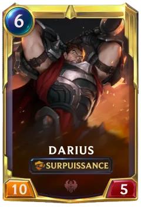
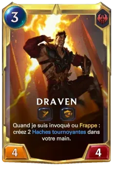
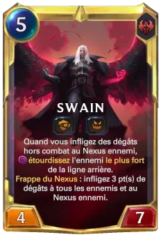

Accédez aux cartes puissantes des champions de Noxus comme Darius, Draven et Swain. Elles incarnent la brutalité et la stratégie militaire, parfaites pour un jeu agressif
Darius : Le bras droit de Noxus et l’incarnation de sa brutalité, Darius est un général impitoyable et redouté sur le champ de bataille. Armé de sa hache gigantesque, il n'hésite jamais à abattre ses ennemis avec force, imposant l'ordre et la discipline par la violence
Draven : Frère de Darius, Draven est le maître incontesté de l'Arène de Noxus. Charismatique, arrogant, et avide de gloire, il manie ses haches tournoyantes avec une précision spectaculaire, cherchant toujours l'attention et l'adulation du public tout en se délectant de ses victoires sanglantes
Swain : Chef suprême de Noxus et stratège inflexible, Swain est un homme aussi rusé que redoutable. Manipulant la magie démoniaque et ses corbeaux espions, il voit tout et anticipe les moindres mouvements de ses ennemis, gouvernant Noxus avec une main de fer et une intelligence redoutable